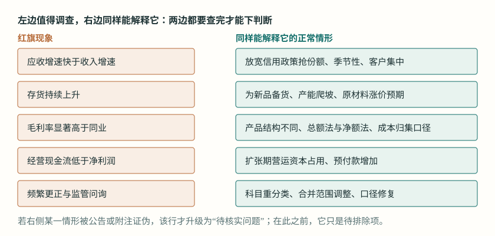
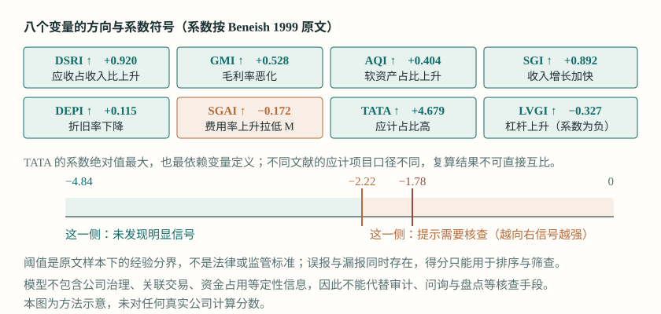

财务造假红旗信号
没有任何单一指标能识别造假。红旗的作用是把“看起来可疑”变成一条条可以核对的差异，并且每条都要写清它同样可能意味着什么别的事情。
红旗是线索，不是判决
设想一家教学示意公司：三年里营业收入从 10 亿元增到 20 亿元，而期末应收账款从 2 亿元增到 5 亿元，应收增速明显快于收入增速。这个现象值得调查，但它本身不是造假证据：放宽信用政策换市场份额、大客户集中或季节性确认都会产生相同现象。
所以红旗信号的作用不是“筛出来就卖掉”，而是提供一个固定的调查顺序：先列出可比口径下的差异，再逐一排除能同样解释它的正常原因，最后把剩下无法解释的部分写成需要向公司或审计师确认的问题。
两个常见误区：一是把单一异常当结论；二是把“现金流”当作免检凭证——现金流确实提供一组独立证据，但它的分类与归集同样可以被安排（参见第 12 章）。
五类财务红旗与其反面解释
下表每一行都写四项：看到什么、要算哪个具体数字、它同样可能意味着什么、以及去哪里找证据。最后一项才是决定性的。

| 观察到的现象 | 需算的具体数字 | 同样能解释它的情形 | 可核对的证据 |
|---|---|---|---|
| 应收增速明显快于收入增速 | DSRI、应收周转天数趋势 | 放宽信用政策抢份额、季节性、客户集中度上升 | 应收账龄、期后回款、信用政策变更披露 |
| 存货持续上升 | 存货周转天数、跌价准备计提比例 | 为新品备货、产能爬坡、原材料涨价预期 | 存货明细与盘点、在手订单、跌价测试假设 |
| 毛利率显著高于同业 | 单位售价、单位成本、产品结构占比 | 产品结构不同、总额法与净额法、成本归集口径 | 附注中的收入确认政策、分部数据 |
| 经营现金流长期低于净利润 | 净现比、营运资本变动拆解 | 扩张期营运资本占用、预付款增加 | 现金流量表补充资料、应收款项融资 |
| 频繁更正公告与问询回复 | 更正前后的差异金额与科目 | 科目重分类、合并范围调整、口径修复 | 公告原文、问询回复与中介意见 |
注意最后一行与前四行的区别：前四行是分析者自己算出来的异常，最后一行是已发生的事后证据（更正、问询、处罚）。后者的信息含量更高，因为它是外部主体已经提出过疑问的记录。
Beneish M-Score 与它的边界
Beneish（1999）提出的 M-Score 把八个比值加权成一个分数，用来识别“与历史样本中被认定操纵盈余的公司更像”的财务特征组合。它不是定罪工具，也不是监管标准。

| 变量 | 定义 | 数值上升通常提示 |
|---|---|---|
| DSRI | （应收 ÷ 收入）本期 ÷ 上期 | 收入更多以应收形式存在，需核对回款 |
| GMI | 上期毛利率 ÷ 本期毛利率 | 毛利率恶化，存在美化利润的压力 |
| AQI | （一减流动资产与固定资产占总资产比）本期 ÷ 上期 | 非流动“软资产”占比上升，需核对资本化 |
| SGI | 本期收入 ÷ 上期收入 | 高速增长期的披露与扩张压力上升 |
| DEPI | 上期折旧率 ÷ 本期折旧率 | 折旧率下降，需核对折旧年限与减值 |
| SGAI | （销售管理费用 ÷ 收入）本期 ÷ 上期 | 费用率上升；系数为负，会拉低 M |
| TATA | 应计项目总额 ÷ 总资产 | 应计利润占比高，含估算成分多 |
| LVGI | 资产负债率本期 ÷ 上期 | 杠杆上升，再融资与偿债压力上升 |
原文样本下的常用经验分界是：M 大于 −2.22 提示需要核查，M 大于 −1.78 信号更强，M 不高于 −2.22 则未发现明显信号。这只是特定样本、特定变量定义下的经验分界，不是法律或监管阈值。
误报与漏报同时存在：模型不能区分“造假”与“行业萧条下的真实恶化”，也不能识别样本之外的造假手法；反过来，故意把应计项目做成正常水平的手法也会让它失分。此外，不同文献对 AQI、TATA 的定义有差异，复算时必须写明选用哪一种，否则不同人算出的 M 分数不可直接比较。
非财务信号与监管信息
下列信号比财务比率更容易确认，因为它们大多以公告形式公开发布；但每一条也都有自己的正常解释：
- 更换会计师事务所：需区分服务到期轮换、事务所合并、以及带有不同意见的更换。公司公告通常会说明原因，但完整信息需看前任事务所是否出具专项说明。
- 关键人员集中离职：财务总监、董事会秘书、审计委员会成员在年报披露前集中离职值得跟进；但正常换届、退休、个人职业变动同样会出现在公告里。
- 监管问询与关注函：这是监管机构已公开发出疑问的记录，信息含量高于分析者的推测；但发出问询不等于认定违规，需看公司回复与后续是否再次被问。
- 控股股东质押比例与资金占用：高质押比例本身是融资行为，需关注平仓风险与是否出现占用的专项说明。
- 关联交易占比与定价：关联交易本身可以提升效率，需关注定价依据、占营业收入比例与是否经过回避表决程序。
去哪核对：上市公司定期报告、临时公告、交易所问询函与回复、证监会行政处罚决定书等公开渠道。引用时应写清公告日期与标题，而不是只写“据报道”。
指数工作台
下面只计算 M-Score 八个变量中的三个（D/S、毛利率、收入增长）。数据为教学示意，可手工复算：DSRI =（500 ÷ 2000）÷（200 ÷ 1000）= 1.25；GMI = 24% ÷ 20% = 1.2；SGI = 2000 ÷ 1000 = 2.0。完整 M 分数需要八个变量，本工作台不会给出。
修改数据，即时复算
两期必须同口径；分母为 0 或收入为 0 时比率无定义。
调查清单与自测
把红旗变成一条可执行流程，建议固定这五步：
写出异常的具体数字与期间（例如“本期应收增速 150%，收入增速 40%”），而不是“应收异常”。
先排除口径原因：合并范围变更、总额法与净额法、会计政策与估计变更、汇率折算。
再排除业务原因：信用政策、季节性、大客户集中、新品备货与产能爬坡。
用外部记录交叉验证：问询函与回复、更正公告、审计意见、关键人员变动、质押与占用专项说明。
把剩下的无法解释部分写成具体问题（含需要哪些明细），作为后续与公司沟通或回避的依据。
自测一：M-Score 高于 −2.22，能否写“该公司存在财务造假”？
不能。只能说“按该模型，公司的财务特征与历史样本中被认定操纵盈余的公司更相似”，属于需要核查的信号。正式认定需要监管或司法程序。
自测二：一家公司多项红旗集中出现，为什么仍然不能定案？
因为红旗的共同前提是“正常情形下不应出现”，而正常解释可能同时作用于多项（例如行业下行会让应收、存货、毛利率、现金流四条同时恶化）。只有找到无法用业务与口径解释的差异，才能进入下一步。
结论：红旗体系的产出是一张“异常—已排除原因—待核实问题”的三栏表；它降低遗漏风险，但不代替审计与监管程序。
依据与边界
本页所有公司描述与数字均为教学示意，不指向任何真实上市公司，也不构成投资建议。红旗信号属于分析者的经验判断；是否构成违规需以监管或司法程序为准。
文献引用：Beneish, M. D. (1999), “The Detection of Earnings Manipulation”, Financial Analysts Journal, 55(5), 24–36。M-Score 的系数、截距与变量定义以原文为准；本页仅转述其框架与方向，不对任何真实公司给出结论。
- 中国证监会 · 上市公司信息披露管理办法
- 中国证监会官网（行政处罚决定书等公开信息查询入口）
- 财政部 · 企业会计准则第28号（政策、估计变更与差错更正）
- 财政部 · 2025年度年报工作通知（收入确认方式变更的差错提示）
如需引用具体处罚案例，应直接引用监管机构公布的处罚决定书原文（写明发布机关、日期与文号），不得转述二手概括或自行推测金额。